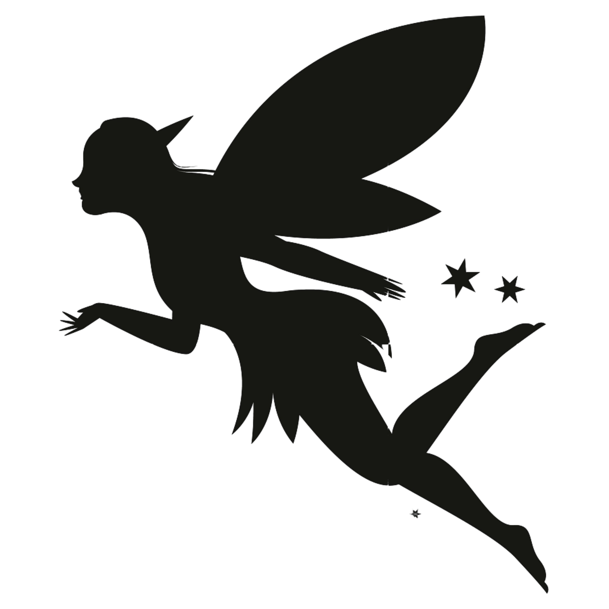

Once upon a time there was a little lass who wanted nothing more than to touch the stars in the sky. On clear, moonless nights she would lean out her bedroom window, gazing up at the thousand tiny lights scattered across the heavens, wondering what it would be like to hold one in her hand.
One warm summer evening, a night when the Milky Way shined more brightly than ever before, she decided she couldn't stand it any longer-she just had to touch a star or two, no matter what. So she slipped out the window and started off by herself to see if she could reach them.
She walked a far, far way, and then farther still, until she came to a mill wheel, creaking and grinding away.
"Good evening," she said to the mill wheel. "I would like to play with the stars in the sky. Have you seen any near here?"
"Ah, yes," groaned the old mill wheel. "Every night they shine in my face from the surface of this pond until I cannot sleep. Jump in, my lass, and you will find them."
The little girl jumped into the pond and swam around until her arms were so tired she could swim no longer, but she could not find any stars.
"Excuse me," she called to the old mill wheel, "but I don't believe there are any stars here after all!"
"Well, there certainly were before you jumped in and stirred the water up," the mill wheel called back. So she climbed out and dried herself off as best she could, and set out again across the fields.
After a while she came to a little brook, murmuring over its mossy stones.

"Good evening, brooklet," she said politely. "I'm trying to reach the stars in the sky so I may play with them. Have you seen any near here?"
"Ah, yes," whispered the brooklet. "They glint on my banks at night until I cannot sleep. Wade in, my lassie, and you will find them."
And off he went-kerplash!-into the water, swimming along a silver path that glistened on the surface and seemed to stretch toward the end of the sea, where the water met the sky. There, in the distance, the little girl saw a beautiful rainbow rising out of the ocean and into the heavens, shining with all the colors in the world, blues and reds and greens, and wonderful to look at. The nearer they drew, the brighter it gleamed, until she had to shade her eyes from its light.
At last they came to the foot of it, and she saw the rainbow was really a broad bright road, sloping up and away into the sky, and at the far, far end of it she could see wee shining things dancing about.
"I can go no further," said the fish. "Here are the Stairs Without Steps. Climb up, if you can, but hold on tight. These stairs were never meant for little lassies' feet, you know. " So the little girl jumped off No Feet's back, and off he splashed through the water.
She climbed and she climbed and she climbed up the rainbow. It wasn't easy. Every time she took one step, she seemed to slide back two. And even though she climbed until the sea was far below, the stars in the sky looked farther away than ever.
"But I won't give up, " she told herself "I've come so far, I can't go back."
Up and up she went. The air grew colder and colder, but the sky turned brighter and brighter, and finally she could tell she was nearing the stars.
"I'm almost there!" she cried.And sure enough, suddenly she reached the very tip-top of the rainbow. Everywhere she looked, the stars were turning and dancing. They raced up and down, and back and forth, and spun in a thousand colors around her.
"I'm finally here, " she whispered to herself She had never seen anything so beautiful before, and she stood gazing and wondering at the heavens.
But after a while she realized she was shivering with cold, and when she looked down into the darkness, she could no longer see the earth. She wondered where her own home was, so far away, but no street lamps or window lights marked the blackness below. She began to feel a little dizzy.
"I won't go until I touch one star." she told herself, and she stood on her toes and stretched her arms as high as she could. She reached further and further-and suddenly a shooting star zipped by and surprised her so much she lost her balance.
When she woke up, she found herself in her very own bed. The sun was peeking through her window, and the morning birds sangin the bushes and trees.
"Did I really touch the stars?" she asked herself "Or was it only a dream?"
Then she felt something in her hand. When she opened her fist, a tiny light flashed in her palm, and at once was gone, and she smiled because she knew it was a speck of stardust.